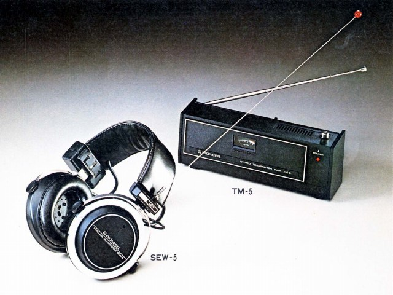
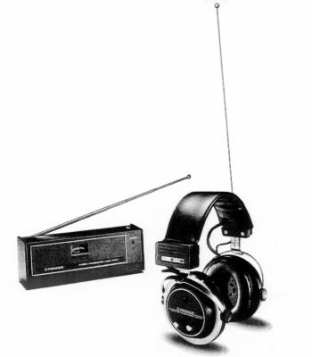

SEW-5


■価格 11,500円■型式 密閉ダイナミック型■振動板 38�oコーン型■インピーダンス 32Ω■再生周波数帯域 50-10,000Hz■許容入力 ■感度 ■コード ■重量 485g（電池006Ｐ×1含む）■発売 1975年■販売終了 1979年頃■備考 実用周波数 FM78〜78.5MHz 実用受信範囲 5ｍ（室内） 別売トランスミッター TM-5(8,300円)
パイオニアのインデックスへ